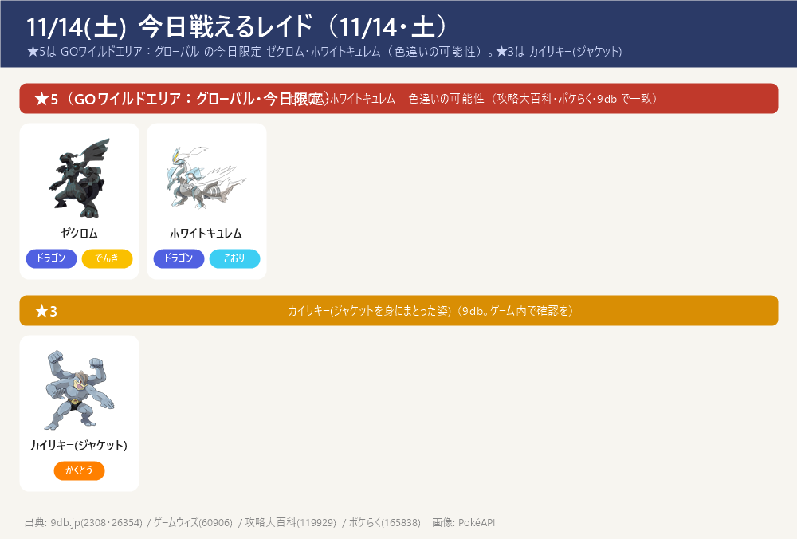
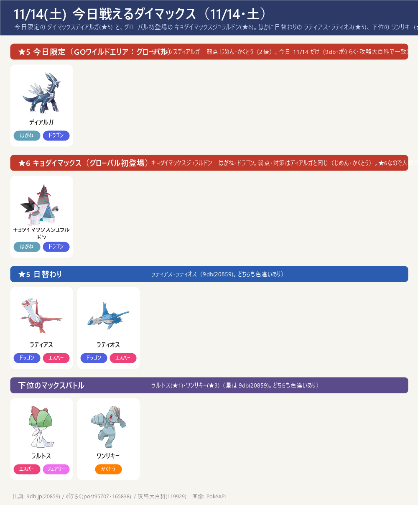
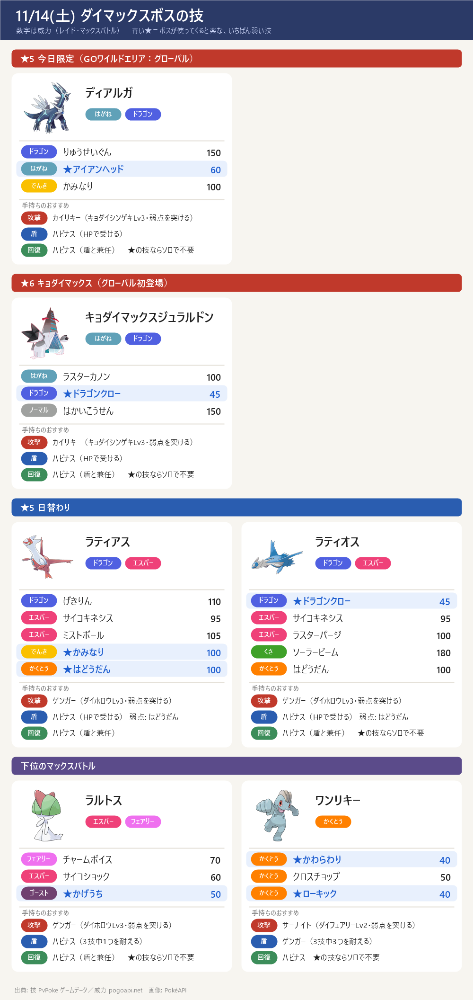

今日のポイント
- 【大イベント・今日と明日】GOワイルドエリア：グローバル2026 11/14(土)・15(日) 10:00〜18:00。はがね・ドラゴンタイプがピックアップ。期間中は「ハガネのように強固アワー」と「ドラゴンのごとく大胆アワー」が交互に出現。無料レイドパス 1日3枚・マックス粒子の1日回収上限が1,600に拡張。はがね／ドラゴン分岐のスペシャルリサーチ（チケット購入者向け）あり
- 【今日限定・MPを使う日】ダイマックスディアルガ(★5) が今日のマックスバトルに登場（11/14 のみ。出現は 5:00〜20:00（ポケらく）／6:00〜21:00（9db）の表記違いあり・ゲーム内で確認を）。弱点はじめん・かくとう。攻撃はキョダイカイリキー・ドサイドン・ドリュウズ、受けは王の姿ザマゼンタ（メタグロス代用）。目安4人（よく育てば3人）。くわしくはディアルガ攻略ページ
- 【グローバル初登場】キョダイマックスジュラルドン(★6・キョダイマックス) が 11/14〜11/15 のマックスバトルに登場。はがね・ドラゴンなので弱点・対策はディアルガと同じ（じめん・かくとう）。★6なので人数は多めに
- 【★5レイド・今日限定】ゼクロム・ホワイトキュレム（どちらもドラゴン・色違いの可能性）。伝説レイドのエナジーで ディアルガ／パルキア の準備にも。明日 11/15 は レシラム・ブラックキュレム に入れ替わり
- 明日 11/15(日) は ダイマックスパルキア（この日限定）＋ キョダイジュラルドン。GOパス：ワイルドウィーク2026 のポイント獲得は 11/15(日) 18:00 まで（ぎんのおうかんの確保）。今日(土)はスポットライトアワーなし（9db・攻略大百科で一致）
今日戦えるレイド（11/14・土）
★5は GOワイルドエリア：グローバル の今日限定 ゼクロム・ホワイトキュレム（色違いの可能性）。★3は カイリキー(ジャケット)
- ★5 ゼクロム・ホワイトキュレムは GOワイルドエリア：グローバル の 11/14(土)限定（明日 11/15 は レシラム・ブラックキュレム に入れ替わり）。どちらもドラゴンタイプで色違いの可能性あり。伝説レイドで集めたエナジーは ディアルガ／パルキア の強化に使える（攻略大百科119929・ポケらく165838・9db2308 で一致）
- ★3 カイリキー(ジャケット)は 9db(2308・26354) に記載。ゲームウィズ(60906)は入れ替わり前の古い一覧（ザシアン・ザマゼンタ等）のままで一致が取れなかった → 9db のみの情報として載せます。ゲーム内で確認を
- ★1・メガ・シャドウレイドは今日の確かな2サイト一致が取れなかったため載せていません（ゲーム内で確認を）

今日戦えるダイマックス（11/14・土）
今日限定の ダイマックスディアルガ(★5) と、グローバル初登場の キョダイマックスジュラルドン(★6)。ほかに日替わりの ラティアス・ラティオス(★5)、下位の ワンリキー(★3)・ラルトス(★1)
- 今日 11/14(土) は ダイマックスディアルガ(★5) が今日限定で登場。弱点はじめん・かくとう（2倍）。11/12・11/13 でためたマックス粒子（上限1,500）とカイリキー(カウンター)などの対策で挑む。目安4人（よく育てば3人）。くわしくはディアルガ攻略ページ
- キョダイマックスジュラルドン(★6)がグローバル初登場（11/14〜11/15）。はがね・ドラゴンなので弱点・受けはディアルガと同じ。キョダイマックス（★6）は強いので人数を多めにそろえて
- 明日 11/15(日) は ダイマックスパルキア（この日限定）に入れ替わり（キョダイジュラルドンは継続）。パルキア攻略ページも用意
- 【各ボスのスペシャルアタック候補】（下のカード。数字はレイド・マックスバトルでの威力。★＝ボスが使ってくると楽な、いちばん弱い技（ボスと同じタイプの技は1.2倍で計算。こちらのポケモンとの相性は見ていない）。戦闘中に技名が出たら受け役を合わせる）


サカキ対策（シャドウゼクロム）：攻略ページへ（別ページ）
締め切り・やること：まとめページへ（別ページ）
この先の予定（タップで開閉）
- 11/15(日) 10:00〜18:00 GOワイルドエリア：グローバル2026 2日目。マックスバトルは ダイマックスパルキア（この日限定）＋ キョダイジュラルドン。★5レイドは レシラム・ブラックキュレム に入れ替わり
- 11/15(日) 18:00 まで GOパス：ワイルドウィーク2026 のポイント獲得（ぎんのおうかんの確保）。報酬の受け取りは 11/17(火) 23:59 まで
- 11/16(月) 10:00〜11/23(月) 20:00 「大きな足跡」イベント。11/16(月)以降 シャドウレイド再開の見込み
- 11/18(水) 18:00〜19:00 レイドアワー：クレセリア・ダークライ
- 11/19(木) 18:00〜19:00 スポットライトアワー：サルノリ・ヒバニー・メッソン（捕まえるとアメ2倍）
- 11/21(土) 11:00〜14:00 「ムゲンダイナ再来」イベント ／ 14:00〜17:00 コマタナ コミュニティデイ
サイトで違っていた点（タップで開閉）
- ★5レイド：11/14(土)限定の ゼクロム・ホワイトキュレム は 攻略大百科(119929)・ポケらく(165838)・9db(2308) の3サイトで一致。9db のイベントページ(26354)の要約には レシラム・ホウオウ も混じって見えたが、これは 11/15 分や前後の取り違えとみて 11/14 は ゼクロム・ホワイトキュレム を採用（ゲーム内で確認を）
- ★3レイド：カイリキー(ジャケット) は 9db(2308・26354) のみ。ゲームウィズ(60906) は入れ替わり前の古い一覧（ザシアン・ザマゼンタ・クリムガン・ミミズズ）のままで、11/14 の2サイト一致が取れなかった → 9db のみの情報として注記つきで掲載
- ★1・メガ・シャドウレイド：今日の確かな2サイト一致が取れず載せず（ゲーム内で確認を）
- ディアルガの出現時間：ポケらく(post95707) は 5:00〜20:00、9db(20859) は 6:00〜21:00 と表記が違う → 両方を記載
- マックスバトルアワー・レイドアワー：11/14 の specific な時刻は 9db・ポケらく・攻略大百科 のいずれにも明記なし → 時刻は載せず（GOワイルドエリア本体は各日 10:00〜18:00）
- 色違い：各サイトとも「色違いの可能性」という書き方。確定ではないのでゲーム内で確認を
- ダイマックスボスの技候補はゲームデータ(PvPoke)から（おんがえし・やつあたりは除外）、威力は pogoapi.net
出典: pokemongo-raku.com（マックス post95707・ワイルドエリア 165838）／9db.jp/pokemongo（レイド2308・マックス20859・イベント4351・ワイルドエリア26354）／pokemongo.gamewith.jp（レイド60906）／pokemon.gamepedia.jp/go（イベント77843・ワイルドエリア119929）／pvpoke.com ゲームデータ（技候補）
画像: PokéAPI ／ 2サイト以上で一致した情報だけを載せています